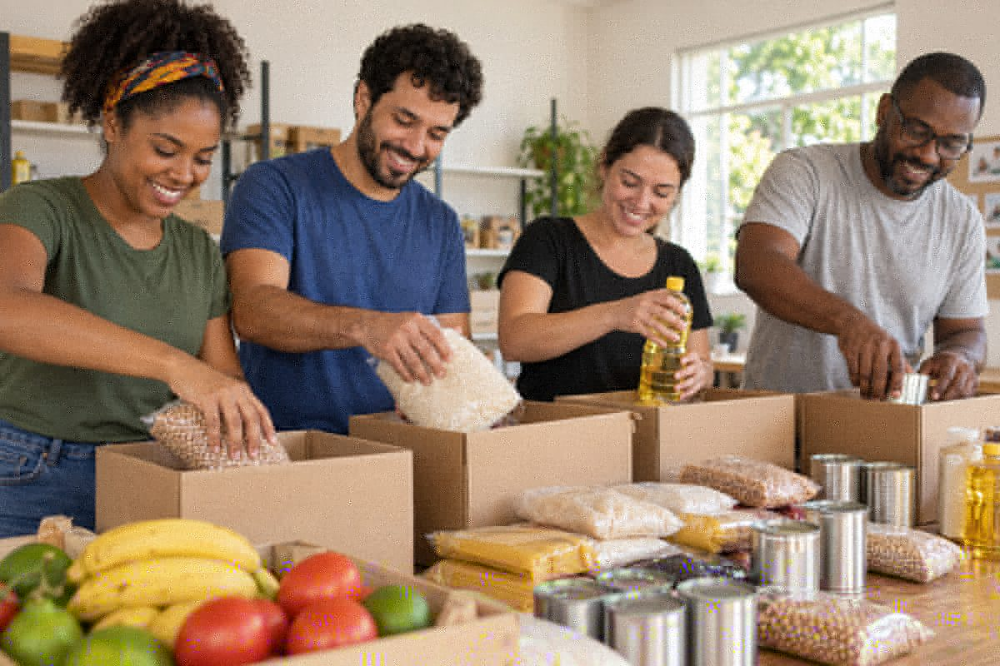

Solidariedade em comunidade
Cada pessoa pode fazer a diferença.
A Elo Solidário é uma ONG fictícia que propõe conectar pessoas a iniciativas de alimentação e educação comunitária.
Conheça nossos projetos →
Quem somos
Nossa missão começa com o cuidado.
Promover a solidariedade por meio de projetos de alimentação, educação e participação comunitária. Este site foi desenvolvido como exercício de HTML5, CSS e JavaScript.
Entre em contato
Dados ilustrativos, sem atendimento real.
E-mail: contato@example.org
Telefone: (11) 3000-0000
Rua Exemplo, 123 — São Paulo, SP